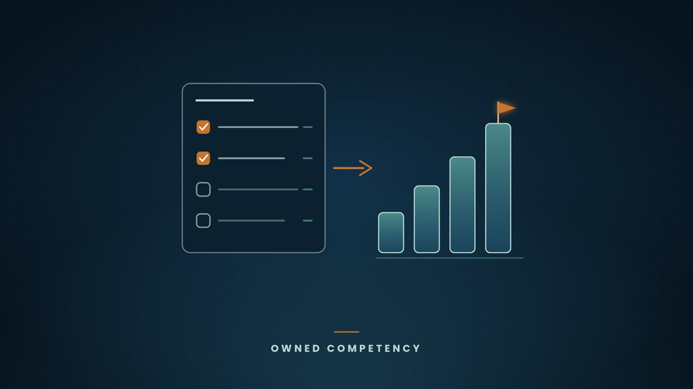
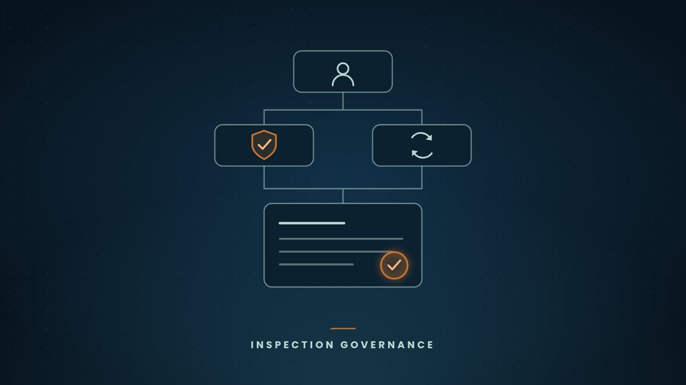
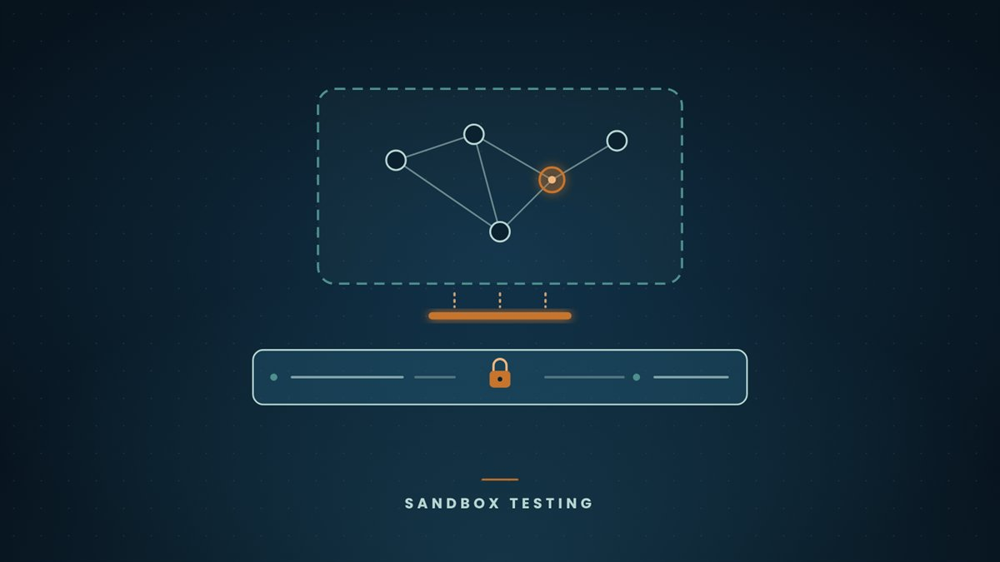
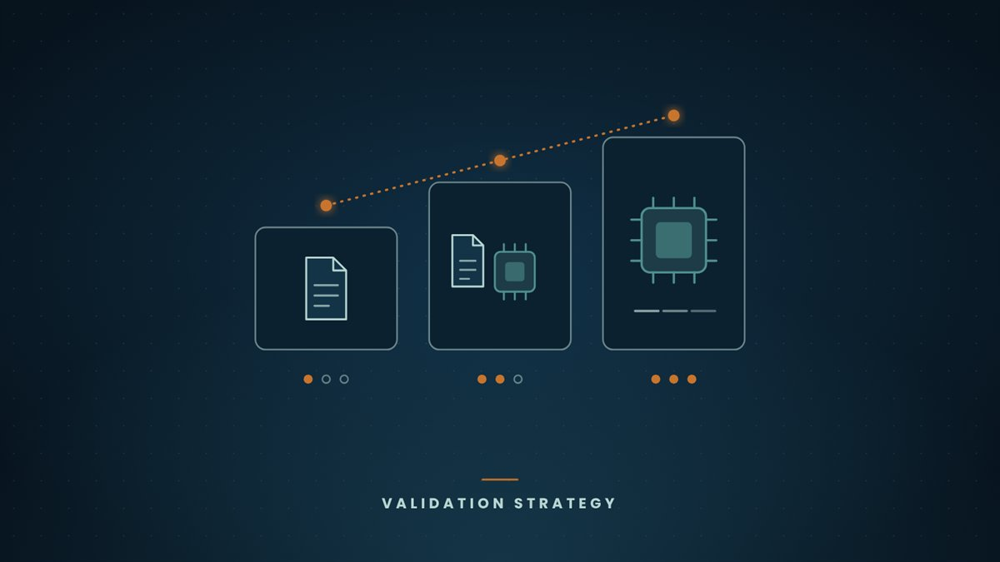
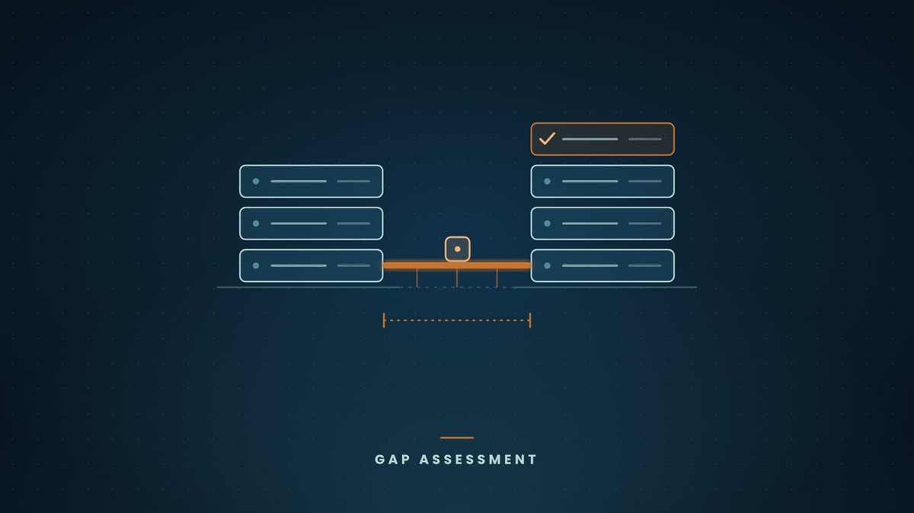
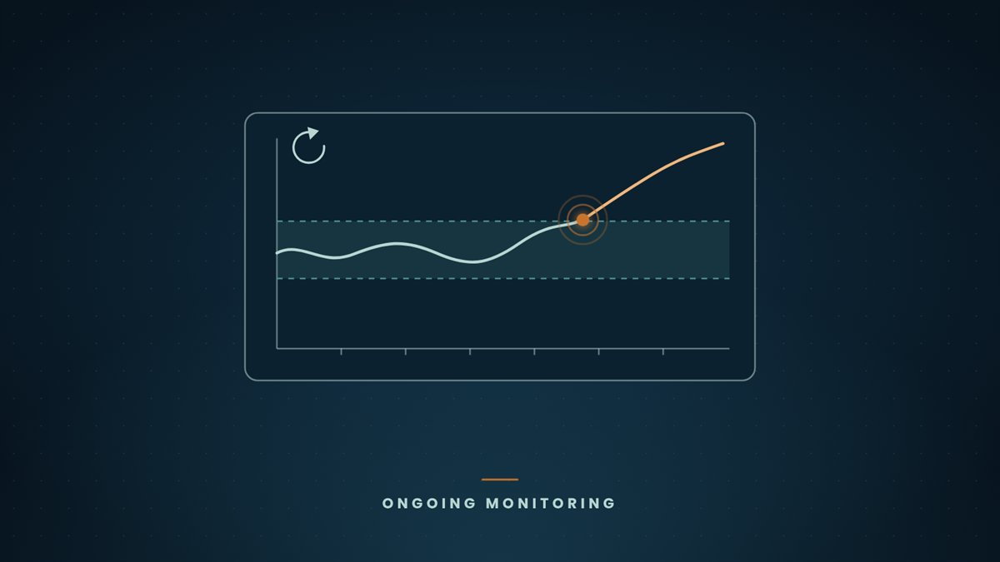

Move from a risk assessment or regulatory gap snapshot to prioritized actions and internal capability the organization can sustain.
Read more about Turning Regulatory Intelligence and Gap Findings into Actionable Competency →

Clear roles, decision rights, and documentation practices that work for traditional quality systems and for new technology.
Read more about Governance That Survives an Inspection, With or Without AI →

Test tools and processes in a controlled way that generates inspector-ready evidence without exposing live GxP systems or data.
Read more about Proving It Before It Reaches Production →

Design validation and governance that fit paper, hybrid, or advanced environments so evidence requirements match actual risk and phase.
Read more about Adapting Validation Strategy to Your Phase and Maturity →

Inventory existing systems, classify GxP risk, and build a practical roadmap so innovation stays defensible for your phase and inspectors.
Read more about Closing the Gap Between Current Systems and Inspection-Ready Innovation →

Ongoing monitoring, periodic review, and change planning so systems stay defensible as processes, data, or tools evolve.
Read more about Keeping Qualified Systems Qualified as They Change →